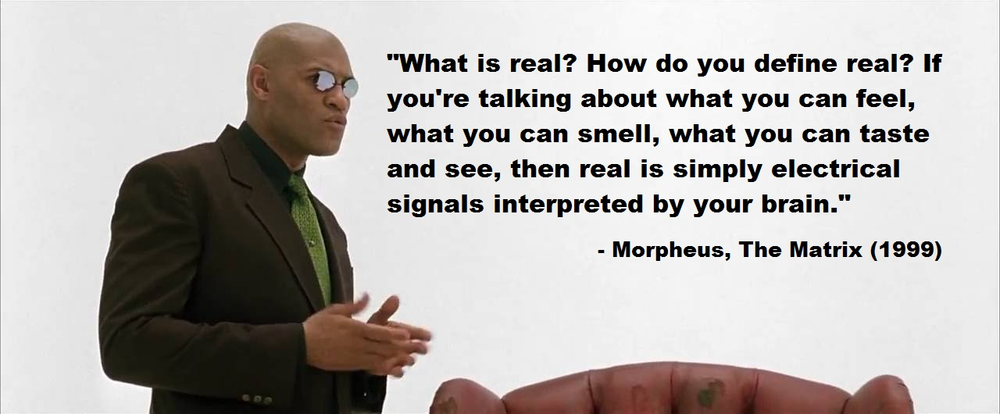

My name is Shi(pronounced like "Shy") Johnson-Bey. I am a student at the University of Delaware pursuing bachelor of science degrees in computer science and neuroscience. This site has links to my past and current GitHub projects, resume, and contact info. Please enjoy.
I want to develop brain-computer interface technologies that provide sensory feedback for virtual reality experiences. VR is becoming a big in 2016 and it will continue to be as we move into the future. So far the biggest problem has been finding an interface that fully complements the VR experience. We have touch controllers that allow for a higher sense of immersion and interaction with the world, but it is still far from feeling real. I want to get our mind involved more in the gaming process and take VR immersion to the next level. Following undergraduate study, I will be attending graduate school to conduct research on closed-loop haptic brain-machine interfaces to help create the next generation of VR.
